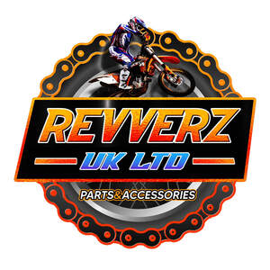

Trade Mark Journal No.2025/040 3 October 2025
UK00004268105 23 September 2025 (12)

- Class 12
- Bicycle handlebars; Bicycle pedals; Bicycle mudguards; Bicycle wheels; Bicycle kickstands; Bicycle brakes; Bicycle tires; Bicycle spokes; Bicycle tyres; Bicycle sprockets; Bicycle saddles; Bicycle gears; Bicycle stabilisers; Handlebars [bicycle parts]; Bicycle rims; Bicycle hubs; Bicycle cranks; Bicycle frames; Bicycles; Bicycle bells; Bicycle trailers; Bicycle chains; Mudguards for two-wheeled bicycles; Bicycle training wheels; Bicycle horns; Bicycle motors; Bicycle pumps; Bicycle racks for vehicles; Bicycle carriers; Spokes for bicycle wheels; Bicycle handlebar grips; Pedal bicycles; Bicycle wheel spokes; Bicycle stands; Bicycle seats; Bicycle wheel hubs; Hubs for bicycle wheels; Brakes [bicycle parts]; Motorized bicycles; Derailleurs for bicycles; Pedals for bicycles; Mudguards for bicycles; Motorised bicycles; Racing bicycles; Handlebars for bicycles, cycles; Motorcycle handlebars; Bicycle wheel rims; Wheels for bicycles; Bicycle saddle covers; Bicycle stands [kickstands]; Mountain bicycles; Road racing bicycles; Brake shoes [bicycle parts]; Sprockets [bicycle parts]; Forks [bicycle parts]; Pumps for bicycle tires; Mudguards for two-wheeled motor vehicles or bicycles; Gear wheels [bicycle parts]; Pumps for bicycle tyres; Rims for bicycle wheels; Tandem bicycles; Bicycle racks [carriers]; Touring bicycles; Brakes for bicycles; Spokes for bicycles; Spokes of bicycles; Freewheels for bicycles; Tires for bicycles; Bicycle tires [tyres]; Electric bicycles; Kickstands for bicycles; Bike bags; Covers for bicycle saddles; Chains [bicycle parts]; Handlebar ends for bicycles; Handlebar grips for bicycles; Chainwheels for bicycles; Saddle covers for bicycles or motorcycles; Bicycle trailers (riyakah); Gear wheels for bicycles; Road bikes; Wheels for bicycles, cycles; Folding bicycles; Saddles for bicycles; Drive trains [bicycle parts]; Disk wheels [bicycle parts]; Inner tubes for bicycle tires; Saddles for bicycles, cycles or motorcycles; Gears for bicycles; Toeclips for use on bicycles; Wheel hubs for bicycles; Collapsible bicycles; Inner tubes [for two-wheeled motor vehicles or bicycles]; Puncture repair outfits for bicycle tyres; Hubs for bicycles; Inner tubes for bicycle tyres; Folding electric bicycles; Drivetrains for bicycles; Bicycle seat posts; Rims for bicycles; Tubeless tires for bicycles; Spoke caps for bicycle wheels; Sports bicycles; Bicycle handle bars; Cranks for bicycles; Wheels being parts of bicycles; Motorcycle kickstands; Tires for bicycles, cycles; Change-speed gears [bicycle parts]; Motorized dirt bikes for motocross; Tubeless tyres for bicycles; Frames for bicycles; Spokes for bicycles, cycles; Brakes for bicycles, cycles; Drive chains [bicycle parts]; Mountain bikes; Bicycle brake lever grips; Bicycle structural parts; Bells for bicycles; Electric unicycles; Electric vehicles; Vehicles (Electric -); Electric motors for two-wheeled vehicles; Electric wheelchairs; Electric motors for motor cars; Self-balancing electric unicycles; Electric locomotives; Motors, electric, for land vehicles; Electric motors for land vehicles; Electric lift trucks; Plug-in electric cars; Electric trains; Electric motor cycles; Electric horns for vehicles; Geared electric motors for land vehicles; Electric one wheel scooters; Self-balancing two-wheeled electric scooters; Self-balancing one-wheeled electric scooters; Electric driving motors for land vehicles; Self-propelled electric vehicles; Quad bikes; Air pumps for two-wheeled motor vehicles or bicycles; Air pumps for inflating bicycle tyres; Air pumps for motorcycles; Tyres for motor vehicles; Electrically-powered motor scooters; Self balancing electric scooters; Motorized scooters; Pedal scooters; Dirt bikes; Tires for two-wheeled motor vehicles; Hubs for motorcycle wheels; Pumps for inflating bicycle tyres; Windproof covers adapted for electric bicycles; Folding bikes; Ski racks for motor cars; Spokes for two-wheeled motor vehicles; Motor scooters; Mudguards for motorcycles; Hydraulic disc brakes for bicycles; Hubs for vehicle wheels (motorcycles); Pedals for motorcycles; Brake pedals [parts of motorcycles]; Motors for bicycles; Two-wheeled motor vehicles; Tyres for motor vehicle wheels; Frames of two-wheeled motor vehicles; Frames for two-wheeled motor vehicles; Drive-chain guards of two-wheeled motor vehicles; Drive-chain guards for two-wheeled motor vehicles; Motor cycles; Motorcycle tires; Air pumps for bicycles for the inflation of tyres; Water bikes; Tyres for motorcycles; Tyres for two-wheeled vehicles; Tubeless tires [tyres] for bicycles, cycles; Tyres for bicycles, cycles; Motorcycles; Motorcycles for motocross; Motors for motorcycles; Kickstands for motorcycles; Engines for motorcycles; Motorbikes; Wheels for motorcycles; Saddles for motorcycles; Freewheels for motorcycles; Motorcycle sidecars; Panniers for motorcycles; Cranks for motorcycles; Rims for motorcycles; Chainwheels for motorcycles; Bells for motorcycles; Frames for motorcycles; Spokes for motorcycles; Scooters [vehicles]; Stands for motorcycles; Motorcycle engines; Saddlebags adapted for motorcycles; Mini-bikes; Mopeds; Chains for driving motorcycles; Two-wheeled vehicles; Motorcycle saddles; Handlebar grips for motorcycles; Luggage carriers for motorcycles; Motorcycle saddlebags; Luggage racks for motorcycles; Non-motorized scooters [vehicles]; Sissy bars for motorcycles; Headlight mounts [parts of motorcycles]; Engines for bicycles; Panniers adapted for motorcycles; Front forks for motorcycles; Saddle covers for motorcycles; Chainguards for vehicles; Warning horns for motorcycles; Structural parts for motorcycles; Wheel rims for motorcycles; Brake discs for motorcycles; Brake rotors [parts of motorcycles]; Wheel hubs for motorcycles; Roller chains for motorcycles; Scooters; Balance bicycles [vehicles]; Brake cables [parts of motorcycles]; Brake calipers [parts of motorcycles]; Handle bars for motorcycles; Handle bars [parts of motorcycles]; Two-wheeled motorised vehicles; Stands of two-wheeled motor vehicles; Motorscooters; Push scooters [vehicles]; Inner tubes for motorcycles; Shock absorbers for motorcycles; Front spacers [parts of motorcycles]; Fork dust boots [parts of motorcycles]; Sprockets for motorcycle drives; Covers for motorcycle saddles; Mobility scooters; Self-balancing scooters; Scooters [for transportation]; Water scooters; Motorized and non-motorized scooters for personal transportation; Electrically powered scooters [vehicles]; Motorised scooters for the disabled and those with mobility difficulties; Motorised unicycles; Motorcycle foot pegs; Electrically powered scooters; Tricycles; Motorized skateboards; Wheels for motor vehicles; T-bars for ski lifts; ATVs [All Terrain Vehicles]; Pumps for bicycles, cycles; Stabilizers [wheels] for use on bicycles; Rims for wheels of bicycles, cycles; Inner tubes for the wheels of forestry vehicles; Thrusters for vehicles; Motors and engines for land vehicles; Wheels for racing karts; Stabilisers [wheels] for use on bicycles; Frames for bicycles, cycles; Motors for cycles; Toe straps for use on bicycles; Linear motors for land vehicles; Snowmobiles; Lifting cars [lift cars]; Lifts (Tailboard -) [parts of land vehicles]; Tailboard lifts [parts of land vehicles]; Connecting rods for land vehicles, other than parts of motors and engines; Vehicles (Connecting rods for land -), other than parts of motors and engines; Inner tubes for bicycles, cycles; Ski boats; Rims for wheels of bicycles; Cranks [parts of land vehicles]; Air pumps [vehicle accessories].
REVVERZ UK LTD